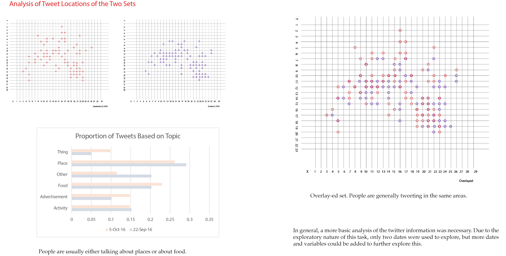
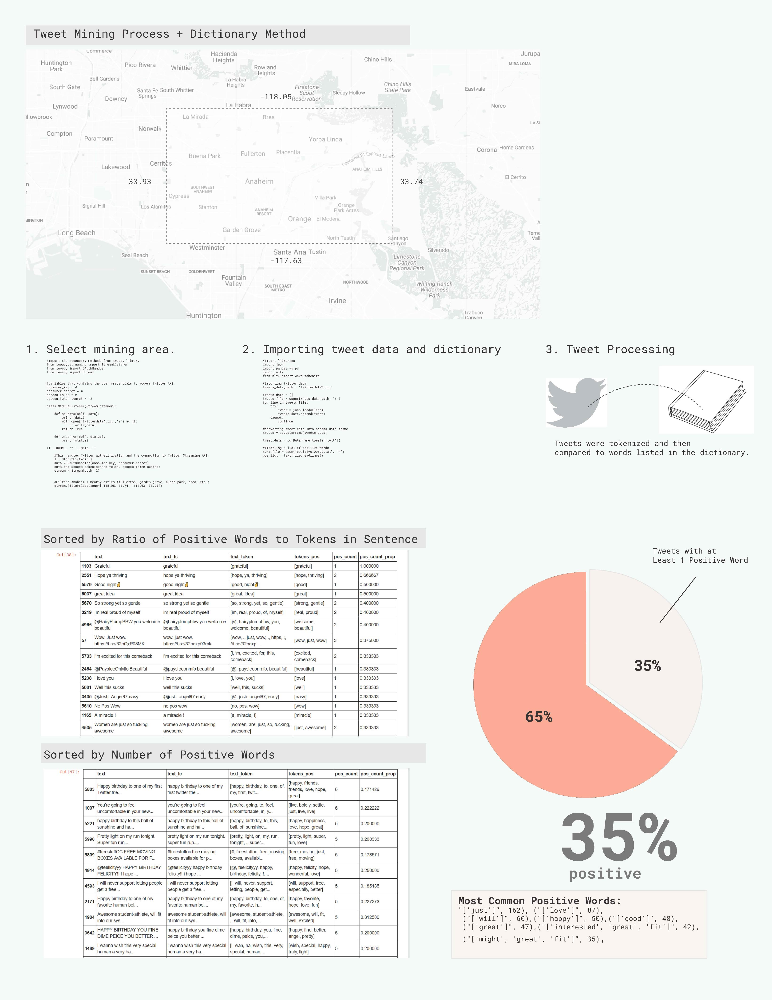

Why is data like twitter so interesting? It has a geolocation.
In Data-Driven Design and Construction, Randy Deutsch mentions how lots of information is all geo-located. From this information we can gather what type of food people eat, how many people use a certain service, etc. The usefulness of this data is that it is immediate in comparison to the census which comes out every ten years. Though of course, there is a gap in the users as certain types of people use social media versus the census which collects data from people of all walks of life not just those with a smart phone.
It’s important to note that it is important to know the limitations of data and that all of these models of data mining are built with their own biases. Data cannot be the sole driver of the design process in your project and there must be a middle ground. Therefore these tools must be adapted in a way for you to achieve what you want to achieve.
It’s important to note that it is important to know the limitations of data and that all of these models of data mining are built with their own biases. Data cannot be the sole driver of the design process in your project and there must be a middle ground. Therefore these tools must be adapted in a way for you to achieve what you want to achieve.
What are some of the Basics for Text Analysis for Social Media?
H. Andrew Schwartz and Lyle H. Ungar provide an overview of the current methods of content analysis of social media in Data-Driven Content Analysis of Social Media: A Systematic Overview of Automated Methods (2015). For social scientists, they can work toward two goals: prediction and insight. They claim that “prediction focuses on automatic estimation or measurement of specific psychosocial outcomes from word use” while insight-based studies “use exploratory language analyses to better understand what drives different behavioral pattens, for example, finding topics that distinguish personality factors.” Prediction is usually done using large multivariate regression or support vector machine models while insight is done by repeated univariate or bivariate analyses that are easier to understand (like correlations). These methods can vary from counting words in a specified word list (lexica) or other methods that generate the lexica or identify keywords that are predictive of a trait.
There are both hand-driven and data-driven techniques. Hand-driven techniques tend to be “more accessible, theory-driven, abstract, and able to handle small datasets, while data-driven tend to be more transparent, capture more connections, and are able to yield unexpected associations”. Hand-driven techniques are such as manual dictionaries or crowd-sourced dictionaries which are created by people while a data-driven techniques create dictionaries and topics from the data it’s fed.
In addition, social media has many limitations such a being a biased sample (not everyone uses social media). Furthermore, online survey matches can be biased depending on the questions. They also point out that a “deeper problem lies in any data-driven analysis: it discovers correlation, not causality.” This means that data-driven analysis can provide you possible suggestions but you have to also think about the context. The data analysis cannot give you the whole picture.
Therefore it's important to keep in mind that something may be happening, but it won’t provide the whole picture. It’ s up to the user to discover the cause and to interpret. In terms of techniques, our goal is to provide insight about the site. We will also be using hand-driven methods (dictionaries) for their transparency.
There are both hand-driven and data-driven techniques. Hand-driven techniques tend to be “more accessible, theory-driven, abstract, and able to handle small datasets, while data-driven tend to be more transparent, capture more connections, and are able to yield unexpected associations”. Hand-driven techniques are such as manual dictionaries or crowd-sourced dictionaries which are created by people while a data-driven techniques create dictionaries and topics from the data it’s fed.
In addition, social media has many limitations such a being a biased sample (not everyone uses social media). Furthermore, online survey matches can be biased depending on the questions. They also point out that a “deeper problem lies in any data-driven analysis: it discovers correlation, not causality.” This means that data-driven analysis can provide you possible suggestions but you have to also think about the context. The data analysis cannot give you the whole picture.
Therefore it's important to keep in mind that something may be happening, but it won’t provide the whole picture. It’ s up to the user to discover the cause and to interpret. In terms of techniques, our goal is to provide insight about the site. We will also be using hand-driven methods (dictionaries) for their transparency.
What can we see from looking at where people tweet?


For this simple analysis I looked at tweets from the same area on two different days. People tend to tweet in the same areas and people were talking about places or food. I took a hand-driven approach in this analysis because the sample was small and hand-labeled all of the topics.
How else can you use twitter data other than using it see what people are talking about? Can you match it to the weather?
For another text analysis project I matched an extreme weather data base to a set of tweets that all contained the word "weather" to see if people were tweeting more negatively under extreme weather. The full notebook can be found here on github.
This diagram demonstrates that there were more negative tweets when there were extreme weather conditions (winter weather, excessive, heat, and heavy rain). For weather conditions with drought, the proportion of positive tweets/negative tweets is has smaller ratio than the none or the all tweets but is still relatively neutral. From this however, you cannot draw the conclusion that people tweet more negatively under extreme weather, but this instead gives you a topic may further explore using other methods.
What can it really tell us? Well, it gives us a good sense of what words our twitter sample uses.
It's a good way to explore what's in our corpus. It can tell us who are users are (assuming they're represented in the sample). A lot of the struggles is finding the corpus and getting a good sample. But also, it doesn't churn out answers. We're the one's who will draw conclusions. We're going to be the ones using it.
Can we build something with this data?
